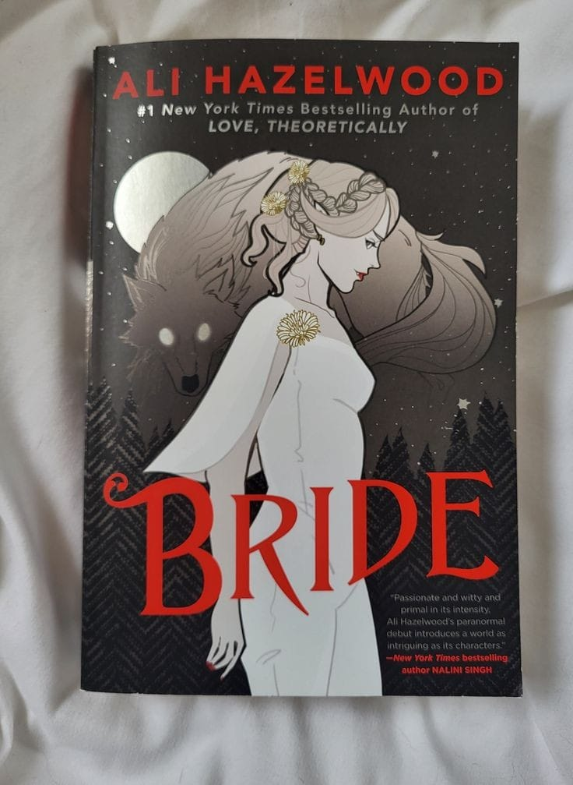
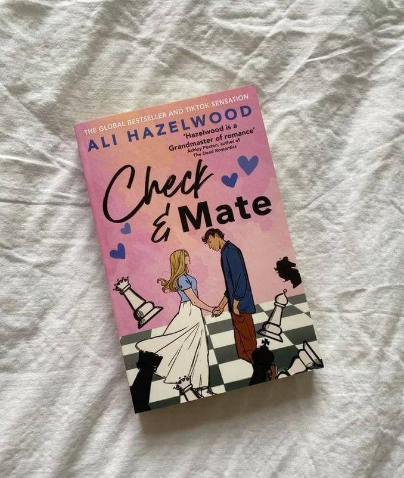
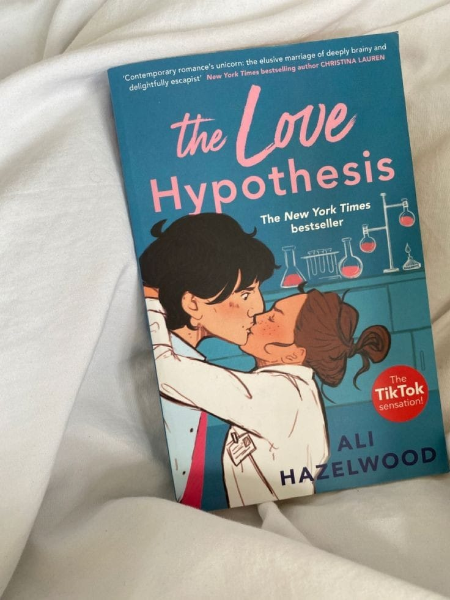
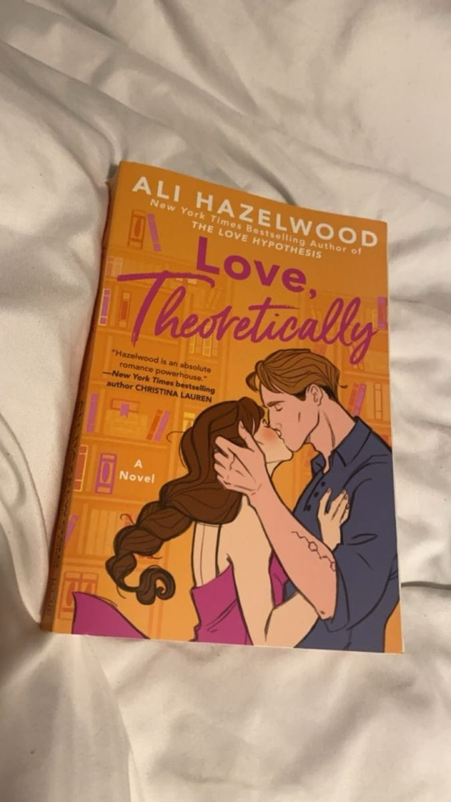

-
Heyaaaaaaaaaaa
I’m originally from Italy, lived in Japan and Germany, and eventually moved to the US to pursue a Ph.D. in Neuroscience. I recently became a professor, which absolutely terrifies me. When I’m not at work you can find me binge-watching shows with my three feline overlords (and my slightly less feline husband), running, or eating candy. I’m represented by the amazing Thao Le of the Sandra Dijkstra Literary Agency.
-
Bride
 A dangerous alliance between a Vampyre bride and an Alpha Werewolf becomes a love deep enough to sink your teeth into in this new paranormal romance from the #1 New York Times bestselling author of Love, Theoretically and The Love Hypothesis. Misery Lark, the only daughter of the most powerful Vampyre councilman of the Southwest, is an outcast—again. Her days of living in anonymity among the Humans are over: she has been called upon to uphold a historic peacekeeping alliance between the Vampyres and their mortal enemies, the Weres, and she sees little choice but to surrender herself in the exchange—again… Weres are ruthless and unpredictable, and their Alpha, Lowe Moreland, is no exception. He rules his pack with absolute authority, but not without justice. And, unlike the Vampyre Council, not without feeling. It’s clear from the way he tracks Misery’s every movement that he doesn’t trust her. If only he knew how right he was….
-
Check and Mate
 In this clever and swoonworthy YA debut from the New York Times bestselling author of The Love Hypothesis, life’s moving pieces bring rival chess players together in a match for the heart. Mallory Greenleaf is done with chess. Every move counts nowadays; after the sport led to the destruction of her family four years earlier, Mallory’s focus is on her mom, her sisters, and the dead-end job that keeps the lights on. That is, until she begrudgingly agrees to play in one last charity tournament and inadvertently wipes the board with notorious “Kingkiller” Nolan Sawyer: current world champion and reigning Bad Boy of chess. Nolan’s loss to an unknown rook-ie shocks everyone. What’s even more confusing? His desire to cross pawns again. What kind of gambit is Nolan playing? The smart move would be to walk away. Resign. Game over. But Mallory’s victory opens the door to sorely needed cash-prizes and despite everything, she can’t help feeling drawn to the enigmatic strategist….
-
The love hypothesis
 As a third-year Ph.D. candidate, Olive Smith doesn’t believe in lasting romantic relationships–but her best friend does, and that’s what got her into this situation. Convincing Anh that Olive is dating and well on her way to a happily ever after was always going to take more than hand-wavy Jedi mind tricks: Scientists require proof. So, like any self-respecting biologist, Olive panics and kisses the first man she sees. That man is none other than Adam Carlsen, a young hotshot professor–and well-known ass. Which is why Olive is positively floored when Stanford’s reigning lab tyrant agrees to keep her charade a secret and be her fake boyfriend. But when a big science conference goes haywire, putting Olive’s career on the Bunsen burner, Adam surprises her again with his unyielding support and even more unyielding…six-pack abs.
-
Love,Theoritically
 The many lives of theoretical physicist Elsie Hannaway have finally caught up with her. By day, she’s an adjunct professor, toiling away at grading labs and teaching thermodynamics in the hopes of landing tenure. By other day, Elsie makes up for her non-existent paycheck by offering her services as a fake girlfriend, tapping into her expertly honed people-pleasing skills to embody whichever version of herself the client needs.Honestly, it’s a pretty sweet gig—until her carefully constructed Elsie-verse comes crashing down. Because Jack Smith, the annoyingly attractive and arrogant older brother of her favorite client, turns out to be the cold-hearted experimental physicist who ruined her mentor’s career and undermined the reputation of theorists everywhere. And he’s the same Jack Smith who rules over the physics department at MIT, standing right between Elsie and her dream job.
Novels
Reviews
I mean, seriously, can a romance get more wholesome than this? I finished this book in about eight hours straight. I just couldn't get enough of the serotonin, it was like Ali Hazelwood laced the pages of her book with crack. But in all seriousness, can I just say, I absolutely ADORED every second of this book. The cast of characters is very diverse, and I enjoyed the representation. This novel was very accessible to read, and the writing style wasn't confusing or unclear. The pace was perfect and it had me invested in every part of the book. I appreciated the fact that Ali Hazelwood normalized Olive and Adam's eight-year age gap, Olive being 26 and Adam being 34. As someone with parents with a nine-year age gap, I can say that it is socially acceptable. Now I'm not saying a 5-year-old and a 13-year-old can date just because of the eight-year difference, but when you get to your late 20s, having an eight-year age gap doesn't come with much of a power imbalance. This book also includes one of my favorite romance tropes, Grumpy meets Sunshine. In this case, Adam is Grumpy and Olive is Sunshine. There was definitely tension, but in an awkward way, which emphasized the trope more. This was such an easy and light-hearted read that made me feel a lot of feelings. I love how the plot of this book was cheesy and somewhat predictable, but it somehow still kept me on the edge of my seat, which is something only a talented writer can achieve. I loved the constant use of inside jokes and mentions of earlier events. For example: "Ik hou van jou", the Pumpkin Spice Latte, and Adam Carlsen's dimples. Anh and Olive's dynamic was adorable, and I LOVED Malcolm and Holden. There's also a little mystery aspect with Tom, and I liked the fact that even though this was a wholesome read, Hazelwood was able to mention some serious topics that need to be talked about, like: misogyny, death of parent, and blackmailing.
Submitted by: Erin martin
Every time I read one of her books, I am in love!! How can she always write these MMC who I want to fall in love with and these powerful FMC?! I loved every single moment of this book as I watched him pine for her the entire book lol. Would recommend this to everyone!!
submitted by Steph Midwinter
I’m struggling with words. I very rarely five star books, but I came immeasurably close on this one. How to explain the joy Love on the Brain gave me? Ali Hazelwood has made me love STEM. I vowed to hate it and worship humanities for all time but her simultaneously accurate and interesting array of STEM topic romance books is everything I’ve ever wanted. She dictates the stream of consciousness in a woman’s brain to near perfection. Her characters love neuroscience, cats, glitter, Star Wars, hummingbirds and encapsulate a million other idiosyncrasies that feel innately human and therefore leaves the reader feeling understood and content about the ending. Her writing makes it clear that women who have dyed hair and septum piercings are undoubtedly looked at with disdain in academia and despite that it is one hundred percent acceptable and any woman’s choice to do so, and of course, their work is just as valid. I don’t care what anyone’s opinion on romance is, Ali Hazelwood is a brilliant woman in STEM, feminist, and writer, and you haven’t read a book like this before
submitted by Bay Taylor
Exclusive Content for Subscribers
Subscribe to our newsletter to access exclusive bonus chapters, short stories, and character profiles!

Where to buy
Available wherever books are sold, in paperback, hardcover, ebook, and audiobook!
AmazonIndie Bound
iBooks
Goodreads
B&N